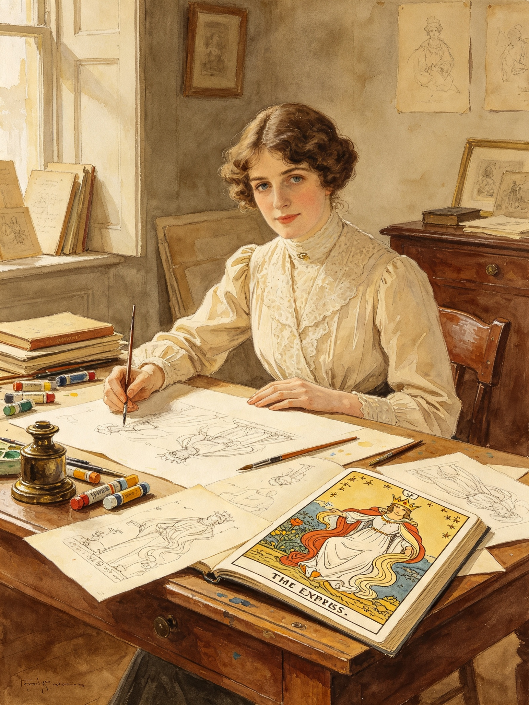

👩🎨 Pamela Colman Smith: The Artist Who Gave Tarot Its Face
Her name was often omitted from history books for decades, but her work is recognized and loved by millions around the world: Pamela Colman Smith was the brilliant British‑Jamaican artist, storyteller and illustrator who created every single drawing for the 1909 Rider–Waite–Smith Tarot — when she was only 31 years old.

Born in London and raised partly in Jamaica and New York, Pamela was a gifted illustrator, writer and performer. She was part of important artistic circles, friends with writers like W.B. Yeats and Arthur Ransome, and known for her love of folklore, fairy tales and symbolic imagery.
When Arthur Edward Waite asked her to create a new deck for the Hermetic Order of the Golden Dawn, she did something no one had done before: she turned abstract symbols into living scenes filled with emotion, action and clear meaning. She drew all 78 cards by hand, giving each figure expression, purpose and context. Her talent for storytelling made the deck accessible to everyone, not just scholars or initiates.
For many years the deck was simply called “the Waite Tarot,” erasing her enormous contribution. Today we know better: this is the Rider–Waite–Smith Tarot, and it exists because of her vision, skill and dedication. We honor her legacy at MyTarot.Day by keeping her original artwork and spirit at the heart of every reading.